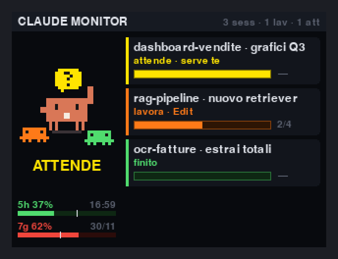
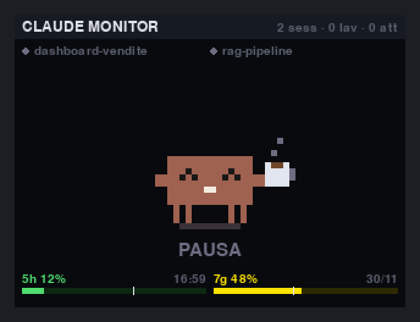
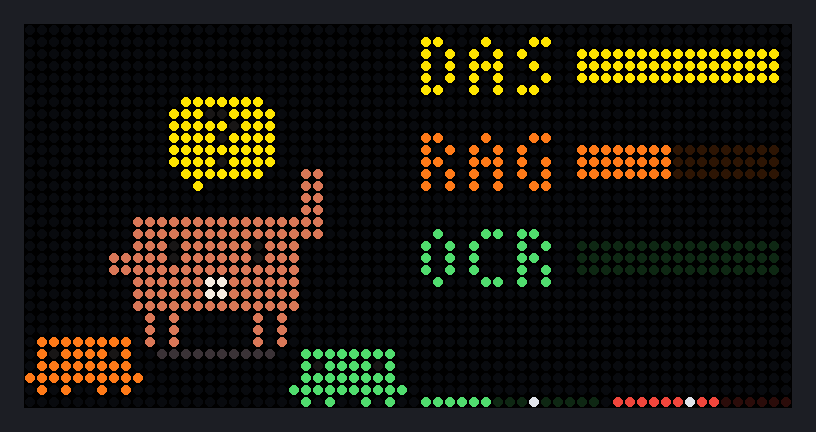
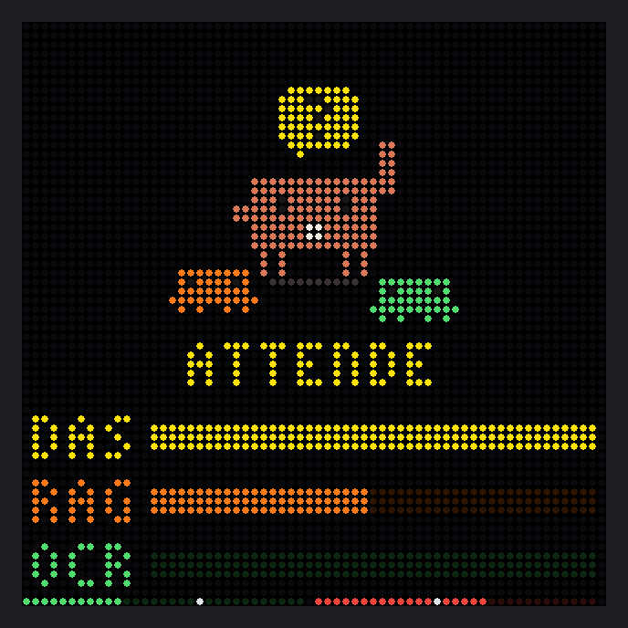

In breve
Con più sessioni di Claude Code aperte (VS Code, Antigravity, terminale) è facile perdere di vista chi sta lavorando e chi aspetta una risposta. Ledino Claw'd Monitor raccoglie gli eventi di tutte le sessioni e li mostra in una finestra, o in un popup nella tray, con una mascotte che cambia colore e costume a seconda di cosa sta succedendo.
Un mod per Claude Code inoltra gli eventi a un piccolo server locale; il monitor li aggrega per sessione e disegna lo stato. Lo stesso stato è pronto in JSON per un pannello LED vero.
A cosa serve
Il monitor risponde a tre domande, a colpo d'occhio:
- Quante sessioni sono aperte e in quale progetto (sul TFT ogni card mostra
progetto · nome sessione). - Chi ti aspetta: una richiesta di permesso, una domanda (
AskUserQuestion) o un piano da approvare (ExitPlanMode) accendono il giallo. - A che punto è il lavoro: la barra di avanzamento segue la todo list interna di Claude Code.
In fondo compaiono anche i limiti d'uso dell'account, sessione (5 ore) e settimana (7 giorni), con un segno che indica se stai consumando troppo in fretta.
I display
Le stesse tre sessioni (una attende, una lavora a metà della todo list, una ha finito) sui tre profili, più il layout di pausa del TFT.




Come funziona
Due pezzi, collegati in HTTP solo su 127.0.0.1:
| Pezzo | File | Cosa fa |
|---|---|---|
| Mod per Claude Code | hooks/register.ts | gira dentro Claude Code (nessun processo per evento) e inoltra eventi, nome della sessione, limiti d'uso e comandi in background a /event |
| Server + finestra | src/monitor.py | finestra pygame e server HTTP locale sulla porta 8765 |
| Logica | src/state.py | aggrega gli eventi per sessione e calcola l'avanzamento |
| Disegno | src/render.py | i tre profili di display e la mascotte |
| Tray | src/tray.py | icona nell'area di notifica e popup sempre in primo piano |
| Demo | src/demo.py | eventi finti per provare senza Claude Code |
Se il monitor è chiuso il mod non fa nulla e Claude Code non ne risente. Se il monitor gira su un altro PC, basta cambiare l'opzione monitor_url del mod da /config.
Stati e mascotte
| Colore | Stato | Quando |
|---|---|---|
| arancio | LAVORA | dopo il tuo prompt e a ogni uso di tool |
| giallo | ATTENDE | richiesta di permesso, domanda o piano da approvare |
| verde | FINITO | ha terminato la risposta |
| grigio | PAUSA | finito da più di 10 minuti |
La mascotte mostra lo stato più importante tra tutte le sessioni (attende > lavora > finito > pausa); le altre sessioni attive compaiono come mini-mascotte del loro colore, fino a tre.
- Mentre lavora indossa un costume a seconda del tool: nuvoletta che pensa, terminale (Bash), detective (Read/Grep), pittore (Edit/Write), cowboy (Agent), mago (MCP), giocoliere (todo), meteo (Web).
- Un tool fallito la fa scuotere con gli occhi a X per 4 secondi.
- In FINITO festeggia per 10 secondi, poi passeggia con la spunta verde sopra la testa.
- In PAUSA alterna una scena ogni 10 secondi (caffè, passeggiata, cuffie, libro, chitarra) e dopo 30 minuti si addormenta.
- Feste automatiche per data: Natale, Capodanno, Halloween, San Valentino.
La mascotte è pixel art 32×32 generata da src/make_sprites.py; si può sostituire mettendo propri PNG in sprites/.
Le animazioni
Tutte le animazioni della mascotte, alla velocità con cui girano nel monitor. Sono pixel art 32×32, qui ingrandite quattro volte.
Gli stati
Uno per stato, più due momenti brevi: il saluto a una sessione nuova e lo scossone quando un tool fallisce.
I costumi al lavoro
Mentre lavora, la mascotte si veste in base al tool che Claude sta usando.
Fine lavoro e pausa
Dopo la festa del FINITO passeggia con la spunta; in PAUSA cambia scena ogni 10 secondi.
Avanzamento e limiti d'uso
Avanzamento. Deriva dalla todo list interna di Claude Code (TodoWrite oppure TaskCreate/TaskUpdate, a seconda della versione). Sulle richieste brevi senza todo list la barra scorre e basta.
Limiti d'uso. Il mod li invia come evento RateLimits. Una tacca bianca segna il tempo trascorso della finestra, cioè il ritmo giusto: barra verde se sei sotto la tacca, gialla fino a 15 punti sopra, rossa oltre. I limiti sono dell'account, quindi includono anche l'uso su claude.ai, ma si aggiornano solo quando Claude Code fa una richiesta; con una API key senza abbonamento la riga resta vuota.
Comandi in background. Se Claude ha finito ma un comando lanciato in background gira ancora, la sessione resta LAVORA con il costume del terminale finché il comando non termina.
Installazione e uso
1. Monitor. Clona il repo e avvia avvia.bat (Windows) o ./avvia.sh (macOS/Linux). La prima volta crea il venv e installa le dipendenze; serve Python 3.10+.
2. Mod. Nel prompt di Claude Code: /plugin install led-monitor --marketplace FedeGambe/ledino-clawd-monitor, poi scope utente. Nessun percorso da configurare.
| Modo | Avvio | Cosa fa |
|---|---|---|
| Finestra | avvia.bat | finestra normale, tasti 1/2/3 per i profili |
| Tray | avvia-tray.bat | mascotte animata nell'area di notifica; un clic apre un popup in basso a destra, trascinabile e ridimensionabile |
| Demo | avvia.bat --demo | eventi finti, per provare senza Claude Code |
Tasti: 1 TFT · 2 LED 64×32 · 3 Pixoo · +/- o rotellina zoom · D demo · ESC esci.
Stato e prossimi passi
- Il pannello vero (ESP32 via seriale o Wi-Fi) è ancora da definire: leggerà
GET /state, che restituisce già lo stato in JSON, oppure riceverà i frame 64×32 / 64×64 già disegnati. - La tray è provata su Windows; su macOS
pystrayvuole il thread principale e va ancora adattata. - Il nome della sessione compare dal prompt successivo all'apertura.
Crediti
Claw'd è la mascotte di Claude Code (Anthropic). Sprite e icona sono disegnati da zero; le idee per le animazioni vengono da progetti della community: clawd-on-desk, clawd-actor, clawd-touchbar, clawd-emotes-skill.